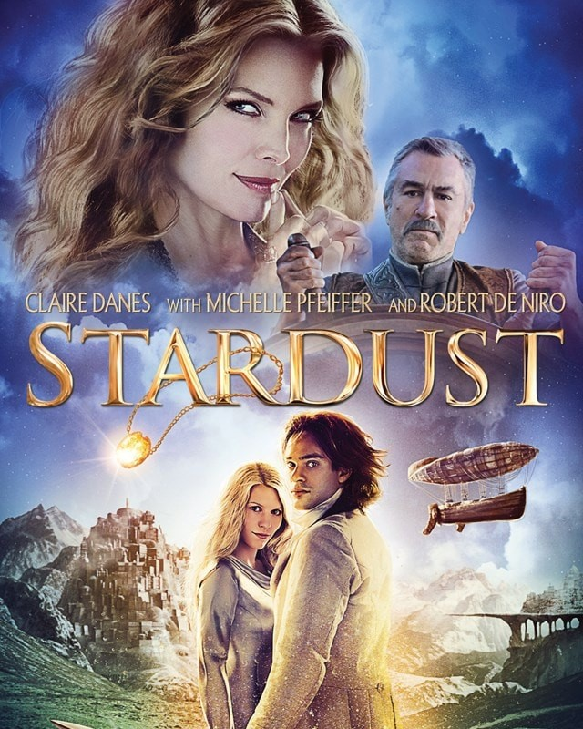

my favourite film - stardust
about the film
"Stardust," directed by Matthew Vaughn, is a captivating fantasy adventure film released in 2007. Set in the fictional English countryside town of Wall, the story begins with a young man named Tristan Thorn, played by Charlie Cox, who ventures beyond the town's protective wall into the magical realm of Stormhold to retrieve a fallen star for his beloved Victoria, played by Sienna Miller. However, this seemingly simple task sets off a series of fantastical events that intertwine the fates of various characters, both human and mystical.
As Tristan embarks on his quest, he encounters a diverse cast of characters, including the celestial being Yvaine, portrayed by Claire Danes, who has taken the form of the fallen star. Along the way, he faces challenges from ruthless witches, power-hungry princes, and cunning pirates. With stunning visuals, heartfelt performances, and a whimsical narrative, "Stardust" is a delightful blend of romance, adventure, and magic that transports viewers to a world where anything is possible.